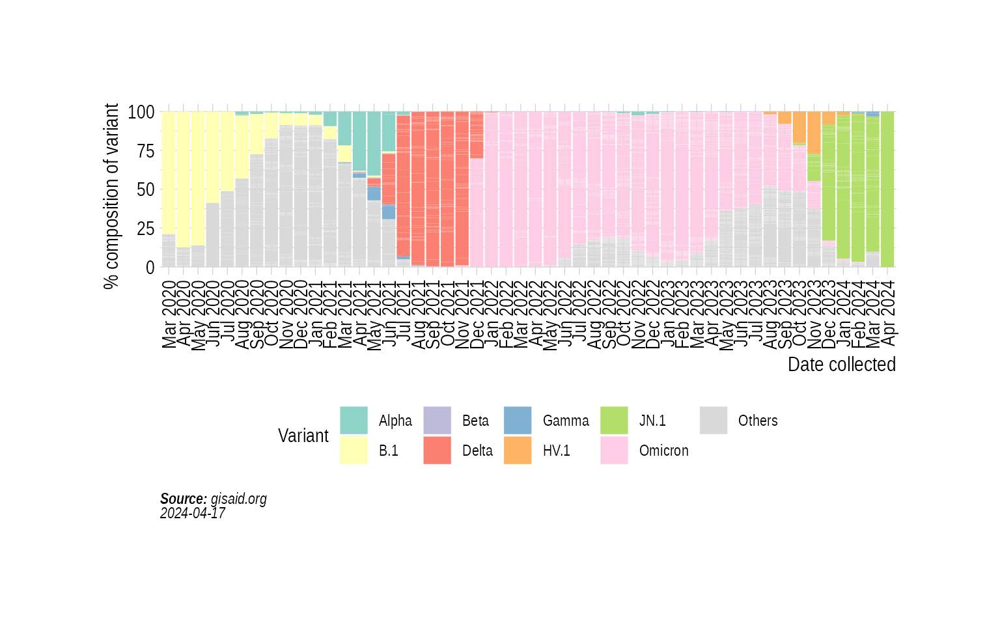
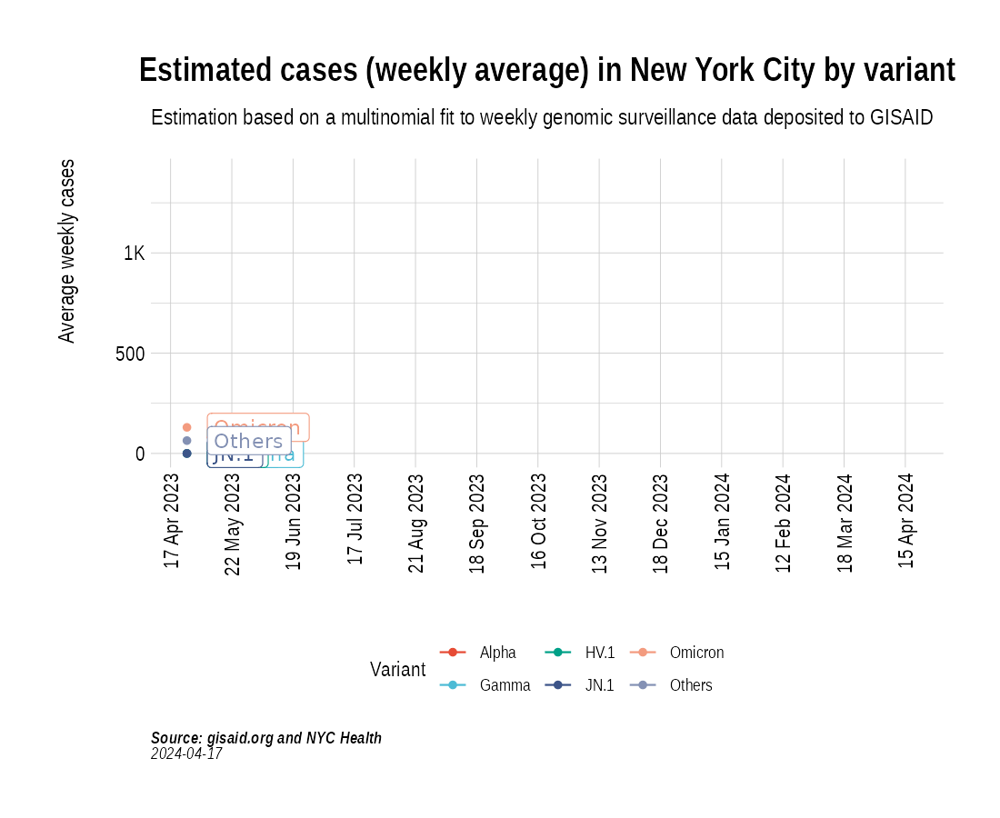

Animation of projected weekly cases - New York City
Source:vignettes/VariantAnimation-NYC.Rmd
VariantAnimation-NYC.Rmd
suppressPackageStartupMessages({
library(covmuller)
library(COVID19)
library(tidyverse)
})
theme_set(CovmullerTheme())Get variants data for NY state
counties <- c("New York", "New York City", "New York County", "Queens County", "Bronx County", "Bronx", "Brooklyn", "Manhattan", "Queens", "Richmond County")
gisaid_metadata <- qs::qread("~/data/epicov/metadata_tsv_2024_01_06.qs")
gisaid_usa <- gisaid_metadata %>%
filter(Country == "USA") %>%
filter(Host == "Human")
# format metadata
gisaid_usa <- FormatGISAIDMetadata(gisaid_usa)
gisaid_usa <- gisaid_usa %>%
arrange(State, MonthYearCollected) %>%
filter(pangolin_lineage != "Unknown")
gisaid_NY <- gisaid_usa %>% filter(State == "New York")
gisaid_NYC <- gisaid_NY %>% filter(District %in% counties)
vocs <- GetVOCs()
custom_voc_mapping <- list(
`XBB` = "XBB",
`XBB.1.5` = "XBB",
`XBB.1` = "XBB",
`XBB.1.*` = "XBB",
`XBB.*` = "XBB",
`XBB.*.*` = "XBB",
`XBB.*.*.*` = "XBB",
`BQ.1` = "BQ.1",
`BQ.1.*` = "BQ.1",
`EG.5` = "EG.5",
`EG.5.1` = "EG.5",
`EG.5.1.1` = "EG.5",
`EG.5.*` = "EG.5",
`EG.5.1` = "EG.5",
# `EG.6.*` = "EG.6",
# `EG.6.1` = "EG.6",
`FL.1.*` = "FL.1",
`FU.1` = "FU.1",
`FU.1.*` = "FU.1",
`GJ.1.2` = "GJ.1",
`GJ.1.*` = "GJ.1",
`JN.1` = "JN.1",
`JN.1.*` = "JN.1",
`HV.1` = "HV.1",
`HV.1.*` = "HV.1"
)
gisaid_NYC <- gisaid_NYC %>% filter(pangolin_lineage != "None")
gisaid_NYC <- CollapseLineageToVOCs(
variant_df = gisaid_NYC,
vocs = vocs,
custom_voc_mapping = custom_voc_mapping,
summarize = FALSE
)Get weekly cases for New York
confirmed <- read_csv("https://raw.githubusercontent.com/nychealth/coronavirus-data/master/trends/data-by-day.csv") %>% select(date_of_interest, CASE_COUNT)
colnames(confirmed) <- c("date", "daily_cases")
confirmed$WeekYear <- tsibble::yearweek(confirmed$date)
confirmed$MonthYear <- GetMonthYear(confirmed$date, datefmt = "%m/%d/%Y")
confirmed_subset_dateweekwise_long <- confirmed %>%
group_by(WeekYear) %>%
summarise(n = ceiling(mean(daily_cases, na.rm = T))) %>%
arrange(WeekYear) %>%
rename(WeekYearCollected = WeekYear)
gisaid_NYC_weekwise <- SummarizeVariantsWeekwise(gisaid_NYC)Distribution of variants
state_month_counts <- SummarizeVariantsMonthwise(gisaid_NYC)
state_month_counts$State <- "NYC"
state_month_prevalence <- CountsToPrevalence(state_month_counts)
state_month_prevalence <- CollapseLineageToVOCs(
variant_df = state_month_prevalence,
vocs = vocs,
custom_voc_mapping = custom_voc_mapping, summarize = FALSE
)
p5 <- StackedBarPlotPrevalence(state_month_prevalence)
p5
Project weekly cases to variant prevalence data from GISAID
voc_to_keep <- gisaid_NYC_weekwise %>%
group_by(lineage_collapsed) %>%
summarise(n_sum = sum(n)) %>%
filter(n_sum > 50) %>%
pull(lineage_collapsed) %>%
unique()
gisaid_NYC_weekwise <- gisaid_NYC_weekwise %>% filter(lineage_collapsed %in% voc_to_keep)
newyork_cases_pred_prob_sel_long <- FitMultinomWeekly(gisaid_NYC_weekwise, confirmed_subset_dateweekwise_long)## # weights: 68 (48 variable)
## initial value 434439.267751
## iter 10 value 173016.817439
## iter 20 value 155358.398122
## iter 30 value 136840.988847
## iter 40 value 113494.176289
## iter 50 value 95852.757915
## iter 60 value 91113.508463
## iter 70 value 88721.981195
## iter 80 value 85254.092934
## iter 90 value 82776.065312
## iter 100 value 80818.029442
## iter 110 value 80752.389195
## iter 120 value 80594.854959
## iter 130 value 80209.950165
## iter 140 value 80090.170987
## iter 150 value 79944.617960
## iter 160 value 79888.464142
## iter 170 value 79869.544153
## iter 180 value 79815.785262
## iter 190 value 79744.247569
## final value 79731.355495
## converged
the_anim <- PlotVariantPrevalenceAnimated(newyork_cases_pred_prob_sel_long, title = "Estimated cases (weekly average) in New York City by variant", caption = "**Source: gisaid.org and NYC Health**<br>", date_breaks = "14 days")
gganimate::anim_save(filename = here::here("docs/articles/NYC_animated.gif"), animation = the_anim)
Look at cases from 2023:
confirmed_subset_dateweekwise_long <- confirmed %>%
filter(MonthYear > "April 2023") %>%
group_by(WeekYear) %>%
summarise(n = ceiling(mean(daily_cases, na.rm = T))) %>%
arrange(WeekYear) %>%
rename(WeekYearCollected = WeekYear)
gisaid_NYC_subset <- gisaid_NYC %>% filter(MonthYearCollected > "April 2023")
gisaid_weekwise <- SummarizeVariantsWeekwise(gisaid_NYC_subset)
voc_to_keep <- gisaid_weekwise %>%
group_by(lineage_collapsed) %>%
summarise(n_sum = sum(n)) %>%
filter(n_sum > 1) %>%
pull(lineage_collapsed) %>%
unique()
gisaid_weekwise <- gisaid_weekwise %>% filter(lineage_collapsed %in% voc_to_keep)
cases_pred_prob_sel_long <- FitMultinomWeekly(gisaid_weekwise, confirmed_subset_dateweekwise_long)## # weights: 40 (27 variable)
## initial value 8703.771652
## iter 10 value 5783.480286
## iter 20 value 5322.331902
## iter 30 value 5286.886121
## iter 40 value 5283.574339
## iter 50 value 5282.366585
## iter 60 value 5281.513676
## iter 70 value 5281.440509
## iter 80 value 5281.368720
## iter 90 value 5281.243714
## iter 100 value 5280.561320
## iter 110 value 5280.405977
## final value 5280.337345
## converged
the_anim <- PlotVariantPrevalenceAnimated(cases_pred_prob_sel_long, title = "Estimated cases (weekly average) in New York City by variant", caption = "**Source: gisaid.org and NYC Health**<br>")## `geom_line()`: Each group consists of only one observation.
## ℹ Do you need to adjust the group aesthetic?
## `geom_line()`: Each group consists of only one observation.
## ℹ Do you need to adjust the group aesthetic?
gganimate::anim_save(filename = here::here("docs/articles/NYC_animated_2023.gif"), animation = the_anim)